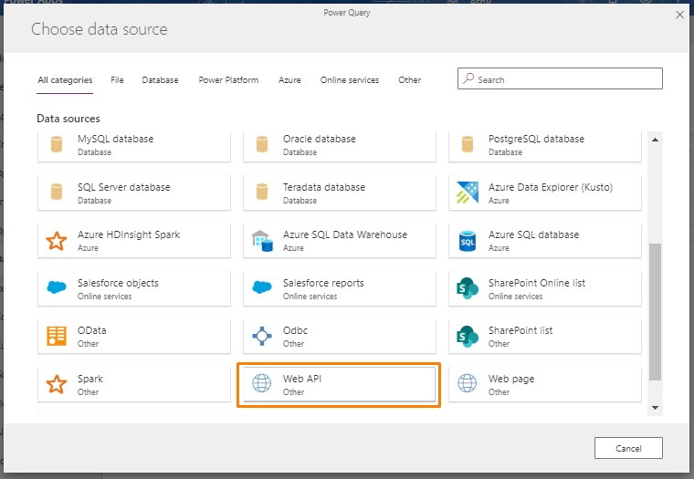
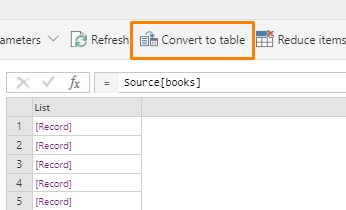

Finally, Dynamics 365/Power Platform has it’s own no code ETL tool. It is called Data Flows(formerly Data Integration). Let’s explore and try it out.
Navigate to https://make.powerapps.com and select your environment here or create a new one, I’m selecting my Dynamics 365 environment.
Navigate to Dataflows on the left pane, expand Data and click Dataflows.
Click on + New dataflow here.
Provide a name for dataflow, we are going to migrate a WebAPI, hence I’d call it WebAPI Dataflow.
Dataflow supports a huge set of data sources to choose from, but mostly they require a gateway if they are outside of your tenant. Select WebAPI here, we will try a publically available API.

I’m going to use https://api.itbook.store/ which a publically available API, you may try with other APIs as well. This API provides an endpoint https://api.itbook.store/1.0/new which provides newly released books, we will use this to store all the latest books data in an entity.
Have a look at the sample response from this endpoint. We are going to store books as entity records.
{
"error": "0",
"total": "10",
"books": [
{
"title": "AI Blueprints",
"subtitle": "How to build and deploy AI business projects",
"isbn13": "9781788992879",
"price": "$31.99",
"image": "https://itbook.store/img/books/9781788992879.png",
"url": "https://itbook.store/books/9781788992879"
},
{
"title": "Data Analysis with Python",
"subtitle": "A Modern Approach",
"isbn13": "9781789950069",
"price": "$31.99",
"image": "https://itbook.store/img/books/9781789950069.png",
"url": "https://itbook.store/books/9781789950069"
},
{
"title": "Build Reactive Websites with RxJS",
"subtitle": "Master Observables and Wrangle Events",
"isbn13": "9781680502954",
"price": "$28.98",
"image": "https://itbook.store/img/books/9781680502954.png",
"url": "https://itbook.store/books/9781680502954"
},
{
"title": "Forge Your Future with Open Source",
"subtitle": "Build Your Skills. Build Your Network. Build the Future of Technology",
"isbn13": "9781680503012",
"price": "$26.18",
"image": "https://itbook.store/img/books/9781680503012.png",
"url": "https://itbook.store/books/9781680503012"
},
{
"title": "Xcode Treasures",
"subtitle": "Master the Tools to Design, Build, and Distribute Great Apps",
"isbn13": "9781680505863",
"price": "$22.03",
"image": "https://itbook.store/img/books/9781680505863.png",
"url": "https://itbook.store/books/9781680505863"
},
{
"title": "Learning C++ by Building Games with Unreal Engine 4, 2nd Edition",
"subtitle": "A beginner's guide to learning 3D game development with C++ and UE4",
"isbn13": "9781788476249",
"price": "$44.99",
"image": "https://itbook.store/img/books/9781788476249.png",
"url": "https://itbook.store/books/9781788476249"
},
{
"title": "Apache Kafka Quick Start Guide",
"subtitle": "Leverage Apache Kafka 2.0 to simplify real-time data processing for distributed applications",
"isbn13": "9781788997829",
"price": "$23.99",
"image": "https://itbook.store/img/books/9781788997829.png",
"url": "https://itbook.store/books/9781788997829"
},
{
"title": "Hands-On Dark Web Analysis",
"subtitle": "Learn what goes on in the Dark Web, and how to work with it",
"isbn13": "9781789133363",
"price": "$29.99",
"image": "https://itbook.store/img/books/9781789133363.png",
"url": "https://itbook.store/books/9781789133363"
},
{
"title": "CentOS Quick Start Guide",
"subtitle": "Get up and running with CentOS server administration",
"isbn13": "9781789344875",
"price": "$31.99",
"image": "https://itbook.store/img/books/9781789344875.png",
"url": "https://itbook.store/books/9781789344875"
},
{
"title": "Machine Learning with Apache Spark Quick Start Guide",
"subtitle": "Uncover patterns, derive actionable insights, and learn from big data using MLlib",
"isbn13": "9781789346565",
"price": "$29.99",
"image": "https://itbook.store/img/books/9781789346565.png",
"url": "https://itbook.store/books/9781789346565"
}
]
}
Now head back to PowerApps screen and provide https://api.itbook.store/1.0/new in the URL text box, you may observe that Authentication kind is set as Anonymous because it’s publically available, otherwise either a gateway is required or API should be in the same tenant. Click Next.
Let’s understand the appearing Power Query screen, we are going to spend quite some time�here.
- On top Header menu has options related to transforming the data.
- Power Query is auto-generated when we apply operations to data, but this can be edited manually also. Power Query is widely used in Power BI.
- Below that our current state of data is shown, we can interact with it and transform as per our requirement.
- On right pane all the Applied Steps are listed, we can traverse back and forth here to update any changes made earlier.
Let’s start transforming now, click on books[list], it will expand the records.
Click on Convert to table button here and then Ok in appearing popup, it will transform your list of records as a table.

Click on the arrow button as shown in the image and uncheck the checkbox ‘Use original column name as prefix’ which makes column names tidier. Click Ok, it will expand all the column data.
By default, all columns datatype are treated as raw(string), We can specify it explicitly also, let’s try this with ‘isbn13’ column so we can use this as Key later. Select the column, expand the ‘Transform column’ and click ‘Detect data type’.
You can see on Query that it is detected as Int64.
Change it to ‘text’ manually.
Table.TransformColumnTypes(#"Expanded Column1", \{\{"isbn13", type text\}\})
You may observe all the transformations are being recorded on the right pane. Now the transformation part is completed, click on Next to proceed to load.
You can either load data to an existing entity or create a new entity here and then load. Choosing an existing entity gives more control over the prefix name and solution. Here we are going to load data to a new entity.
Select ‘Load to new entity’, specify name and display name for the entity. In the field mapping section we will specify isbn13 as Key field and title as Primary name field, before doing that change field type as Text for both of them and then set as Key and Primary name fields. Now click Next to schedule.
We can choose to run our dataflow manually or can be scheduled at regular intervals, which can be triggered manually as well. Once scheduled click Create which will start creating entity and loading the data.
Once it is loaded click Done and verify this loaded data in Dynamics 365 Advanced Find or Model-driven Power App.
To Refresh any dataflow manually you can click Refresh as shown in the image.
Please feel free to get back in case of any feedback or query.
Cheers!